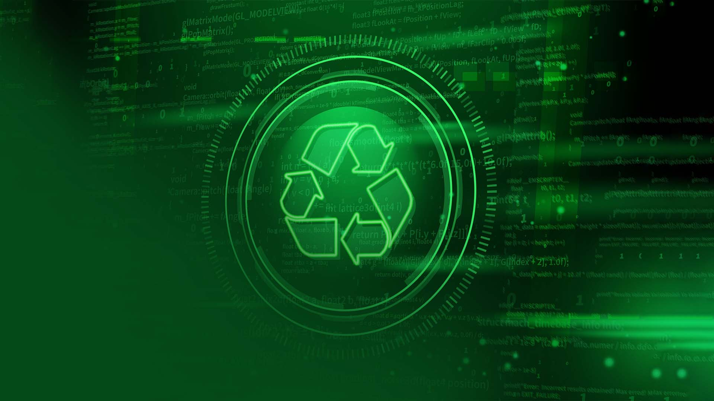
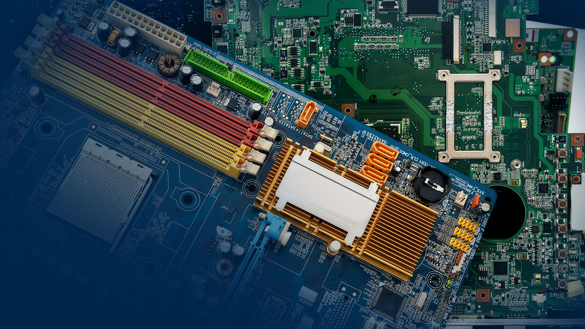

Ir para o site
Bem-vindo
ao blog da
Cobra
Informática
INSCREVA-SE EM NOSSO MAILING FIQUE POR DENTRO DAS INFORMAÇÕES DO SETOR DE ITAD
MAIS LIDOS
A solução para eliminar definitivamente os dados de forma certificada
A importância do Manifesto de Transporte de Resíduos (MTR) para a sua prestação de contas
5 Passos para o descarte correto de ativos de T.I

Gestão adequada de resíduos sólidos previsto na Lei nº12.305
Cobra Informática adquire número DUNS
O PROCESSO DE GESTÃO DE RESÍDUOS DE ATIVOS DE INFORMÁTICA
Atribuindo valores intangíveis para o seu negócio

Processos aplicados aos Descartes de TI
Transporte via drones.
A nova fase da tecnologia aérea
O que o Catar está fazendo de sustentável para a Copa de 2022?
Instituto Ayrton Senna CERTIFICA
A COBRA INFORMÁTICA
PIONEIRA NO SETOR DE ITAD NO BRASIL
COMO IDENTIFICAR A PEGADA ECOLÓGICA
DOS SEUS EQUIPAMENTOS ELETRONICOS?
Comemorando os 20 anos de computação confiável
A reciclagem dos metais
Para que serve a virtualização de servidores?
O impacto da bitcoin nos Data Centers
OS 3 PILARES DA SUSTENTABILIDADE
3 perigos dos lixos eletrônicos
O que é TI Verde?
ENTENDA SOBRE DADOS PESSOAIS E DADOS SENSÍVEIS
OS REFLEXOS DA LGPD NAS RELAÇÕES DE TRABALHO
COMO A NFT AFETA O MEIO AMBIENTE?
PROTEGENDO SUA EMPRESA DE CIBERATAQUES
A MANUFATURA REVERSA DE ELETROELETRÔNICOS DIANTE A NORMA ABNT 16.156/2013
VANTAGENS DE INVESTIR EM GESTÃO DE ATIVOS DE T.I
COMO EVITAR FALHAS NO ESTOQUE
A IMPORTÂNCIA DO ESG NAS EMPRESAS
QUAL A IMPORTÂNCIA DO WMS NA GESTÃO E ARMAZENAGEM DE UMA EMPRESA?
SAIBA A IMPORTÂNCIA DO SELO VERDE PARA SUA EMPRESA
UMA PARCERIA QUE SALVA VIDAS
Como se conectar diretamente à cloud? O Data center interconectado
COMO USAR CLOUD PÚBLICA DENTRO DE UMA ESTRATÉGIA CLOUD HÍBRIDA?
A Sustentabilidade na Logística Reversa
Pilhas e baterias são consideradas E-lixos?
Entenda qual o impacto do E-lixo para o meio ambiente
REEE: DEFINIÇÃO E CLASSIFICAÇÃO
MINERAÇÃO URBANA, UM SETOR PROMISSOR E EM ASCENSÃO
WEEE MAN - UMA ESCULTURA GIGANTE PARA UMA CAUSA AINDA MAIOR
CRIPTOGRAFIA NECESSÁRIA DO DIA A DIA
CONHEÇA O PACTO GLOBAL ENTRE ORGANIZAÇÕES E SOCIEDADE
O METAVERSO QUE NOS AGUARDA
Brasil sofre mais de 16 bi de tentativas de ataques cibernéticos em 2021
COBRA INFORMÁTICA REPOSICIONA MARCA NO MERCADO
Internet pode não ter dono mas tem regras
Conheça a Classificação TIER, responsável por nivelar e padronizar Data Centers
CONHEÇA OS 10 MAIORES DATA CENTERS DO MUNDO
Entenda a Lei Geral de Proteção de Dados (LGPD) e a sua importância
CUIDADOS BÁSICOS AO OFERECER INTERNET EM SEU ESTABELECIMENTO
Qualidade ambiental urbana na pauta brasileira
Eu acredito na cura do câncer infantil
produtos de logística reversa precisam de publicidade funcional
A GARANTIA DA EXCLUSÃO PERMANENTE DOS SEUS DADOS
Conheça os Objetivos que devem guiar governos e empresas até 2030
A Tecnologia 5G Móvel já está na nossa porta
Greenwashing: Estão querendo te enganar sobre serem sustentáveis
Apenas 46% dos municípios brasileiros estão regulares com aterros sanitários
VOCÊ NÃO PRODUZ LIXO, SAIBA PORQUÊ
O nosso motivo em amar plantar árvores
Como podemos incentivar as próximas gerações ao consumo sustentável?
A Economia do Futuro é circular
Certificação e Registro que comprovem a Logística Reversa
ESG é a inovação necessária para os negócios
Como sua empresa pode movimentar a economia circular e ainda contribuir com o meio ambiente
O que são os ativos tecnológicos e a importância da gestão deles no seu negócio
Como destinar de forma correta e segura os equipamentos eletrônicos substituídos
Brasil destina corretamente somente 3% do e-lixo que produz
Brasil é o 5º país no mundo que mais produz e-lixo
Como a Logística Reversa se tornou um importante pilar social, econômico e ambiental dentro da cadeia de consumo
Como as certificações ambientais diferenciam sua empresa (para melhor)!
Contribuindo com o meio ambiente e impulsionando o crescimento da economia
O mercado tecnológico e o descarte consciente de ativos de informática
Logística reversa no Brasil: sustentabilidade e novos negócios
Eficiência Cobra Informática: logística no escoamento de ativos eletrônicos